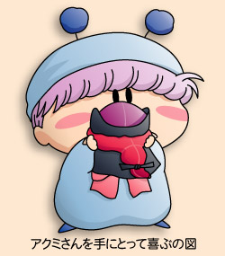
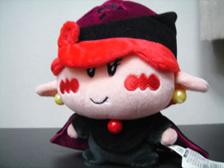
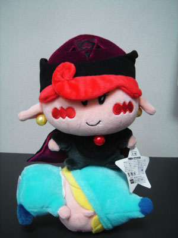
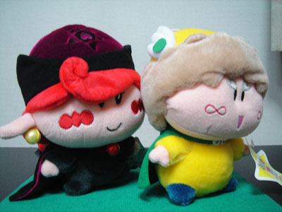
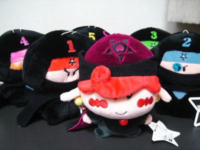

先日、ヤフーオークションにてアクミのぬいぐるみ（２／１サイズ）をゲットすることに成功しました。ゲットした瞬間の興奮は今も冷めず、その勢いで今回の記事を作成♪
 このぬいぐるみ、もともと出荷数が少なかったのか、オークションでも滅多に出品されない希少なぬいぐるみなのです。そのため私はこのアクミぬいを『伝説のミルモぬい』と勝手に呼んでいます（伝説指定のぬいは、今のところオトメ、ネズミ、そしてアクミの３体）。
まずはアクミぬいぐるみを手にとってじっくり観察(^^)。表情の良さは他のぬいぐるみと同じで言うまでもなく、中でもアクミ独特の帽子や髪型をうまく再現している点は感激の一言！いつもながら完成度の高いぬいぐるみを提供してくれるスクラッチ社さんに敬意を表すほどです。

どの角度から見てもアクミです
ここからはアクミぬいを使った応用例を。私が持っている他のぬいぐるみと組み合わせて撮影会を行いました。

アクミの妄想

仲良しさん！？

だます人、だまされる人（※８３話参照）

無能な部下とともに
最後にですが、オークションの情報を提供してくださったパチッチョさん、そして素敵なぬいぐるみを出品してくださった方に対して、この場でお礼を申し上げます。ありがとうございました(^^)。
(2005/3/3)